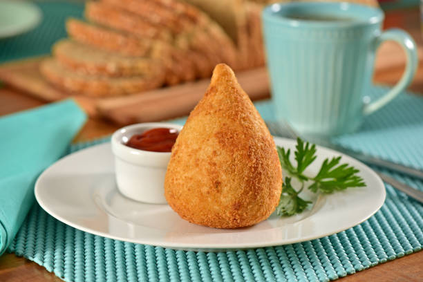

Feijoada
Feijoada is a common name given to dishes from Portuguese-speaking regions and countries such as Portugal, Brazil, Angola, Mozambique, Timor-Leste and Macau. It consists of a bean stew, usually with meat, and almost always accompanied by rice.

Coxinha
Coxinha is a Brazilian snack, from São Paulo, also common in Portugal, made with wheat flour dough and chicken broth, which involves a filling made with seasoned chicken meat, cheese, pepperoni or various other types of flavors.
Brigadeiro
Brigadeiro is a typical sweet of Brazilian cuisine that quickly spread throughout Brazil, becoming common throughout the country for its presence at birthday parties, along with sweets such as cajuzinho and beijinho. It is also known by the name of negrinho in Rio Grande do Sul.